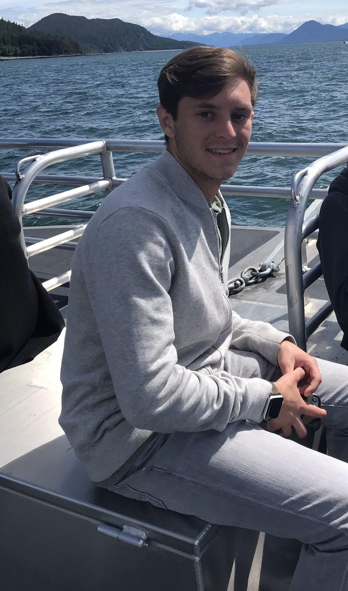

WELCOME TO THE UNIVERSITY FLOORPLAN
This web-app is designed to help those at the University of Florida to find their way around campus!
destinations!
Our Goal
Exploration:
We interviewed several freshmen at UF to find out what they want to
help them succeed during their first year at UF. The majority of them answered
that they needed help figuring out where their classes were and how to get to
them. A few mentioned that UF is much bigger than the high school they were
used to and would like an easier way to find their classes than google maps,
which wouldn’t tell them where the classroom is, just the building.
Ideation:
We took this problem and brainstormed an application which would help
students at UF find their classes which we named the University Floorplan.
The goal of our application is providing an accessible map of UF campus which
students will be able to use to find directions directly to their desired
classroom. We created our presentational poster showcasing the features we
hope to have in the final product.
Refinement:
After defining our idea along with the features we hope to provide, we
created our poster and personas which showed our progress towards our final
product. The poster was to gather feedback from peers as well as to see what
other users bases we could find for this application. Through our poster,
our interviews with various freshmen, and the development of our personas
we were able to find our focuses to help us better understand our user base
and use this to refine our application to our goal of ease of use and accessibility.
Our Justification:
We have found, after interviewing several incoming freshman as well as some senior students, that
students at UF have a unmet need to be able to easily locate their classes.
Incoming students often are met with a loss when it comes to traversing their new campus, with many
students noting how UF's campus is several times larger than what they are used to.
With this information, we are hoping to fill this unfilled need by creating a platform which students
will have easy access to locate their classes without any extra hassle.
Our Targets:
We hope to help the UF freshman population, visitors to UF, and older students to traverse campus at
their ease.
Participants:
Alexander Prokop
I am a 4th year computer engineering student who has been studying webdev and creating
programmatical simulations to learn AI. I was in charge of refinement and the creation of the website for the
University Floorplan app and its features. My goal for the University Floorplan app is to help students adjust to their
new environment.
Alexander
Martin
Martin
Alexander Martin - 5th Year UF "Super Senior" graduating
in 2023. Mainly develops in C++ and Java, dabbles in game
development on the side with support from an artist friend.
Alex's believes that UF Floorplan will be helpful for both
new older students alike and is excited to see many people
make use of the app every term.
Ryder
Valiquette

Valiquette
I am a 4th year in Computer Science, with a minor in
Biomechanics. I spend much of my time working on
improvements for code and trying to better myself in the
field. This project speaks to me since when I was a freshman,
and even still, during the first few weeks of classes I find
myself in a world of confusion looking for classes. I have s
pent upwards of 15 minutes looking for a room in a building
before, and it honestly never gets better. Because of this
I have been excitedly working towards this application.
Youssef
Ahmed
Ahmed
My role in the project was emphasized in the research
segment, where I contributed to translating user
interviews into user personas. I wrote out user
stories and details that pertain to our target
users.I also focused on the brainstorming section
and was a part of the process for feature selection.
I contributed with more emphasis to both the exploration
and generation process. Finally, I compiled all of our
exploration and generation process into one presentation.
Harrison Salzverg